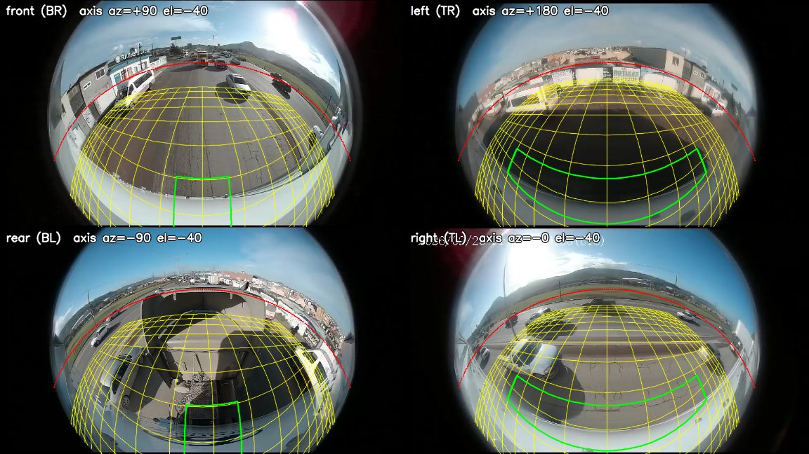
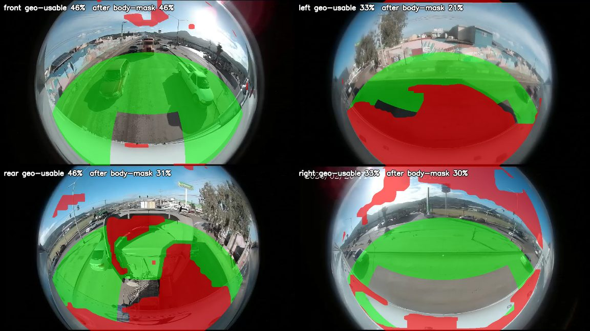
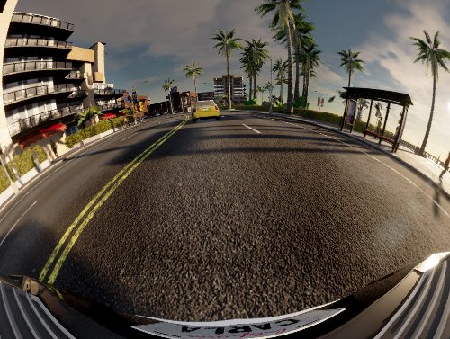

Surround-view systems stitch four fisheye cameras into a single bird's-eye view. If one camera is slightly rotated, the seams tear. Factory calibration uses printed targets; the goal here was to tighten calibration without them, so the system can keep itself calibrated on the road.

What I did
- Proposed and implemented a targetless calibration method that uses known vehicle dimensions and image boundaries to refine camera roll, narrowing the image-search region for online road calibration.
- Implemented gradient-based boundary extraction and robust optimization in Python/OpenCV, compared calibration methods, and investigated systematic bias and poorly conditioned views.
- Contributed to a C++/OpenCV surround-view simulator with interactive camera-pose switching, and ported a road-scene selection pipeline built on feature tracking and geometric outlier rejection.

